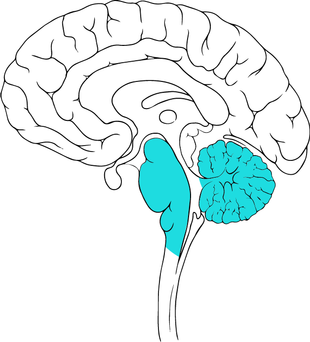
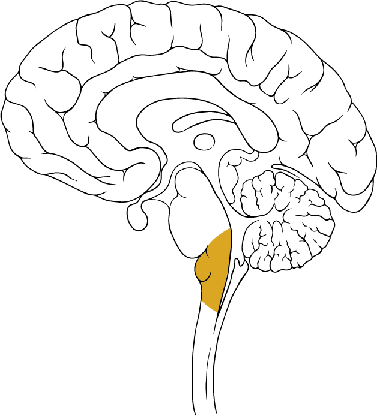
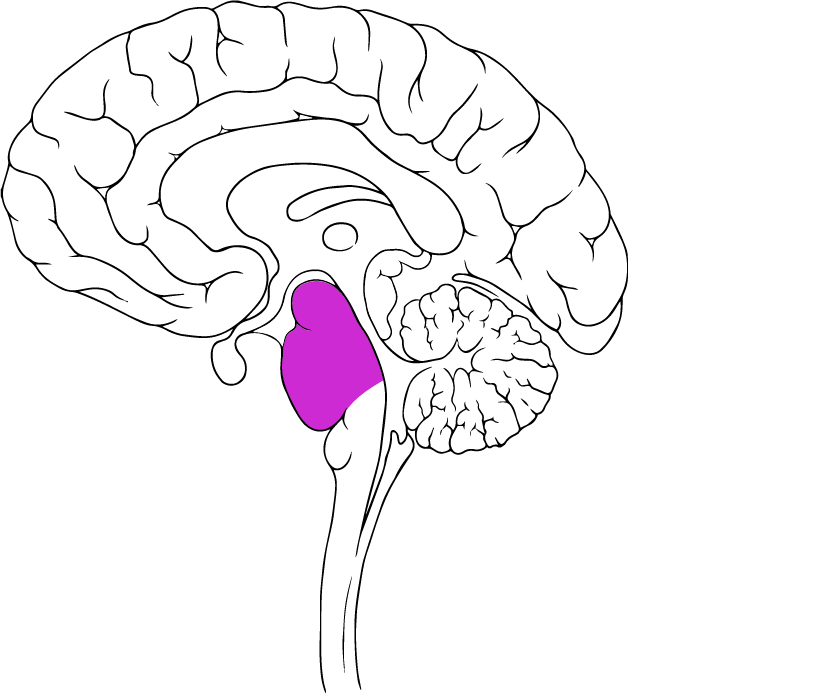

Hindbrain
The hindbrain is the inferior most part of the brainstem and is comprised of the medulla oblongata, pons and cerebellum.
Medulla Oblongata
The medulla oblongata is the inferior most part of the hindbrain where the spinal cord terminates. It is primarily involved in involuntary movement such as sneezing, heart rate, breathing, and blood pressure.
Pons
The pons is situated superior to the medulla oblongata and anterior to the cerebellum. It contains neural pathways that communicate signals from the other regions of the brain to the medulla and the cerebellum as well as carrying messages back up to the different cortexes from the rest of the hindbrain.
Cerebellum

The cerebellum is the largest part of the hindbrain and functions primarily for the control of motor movement such as maintaining balance, coordinating movement, motor learning, etc..